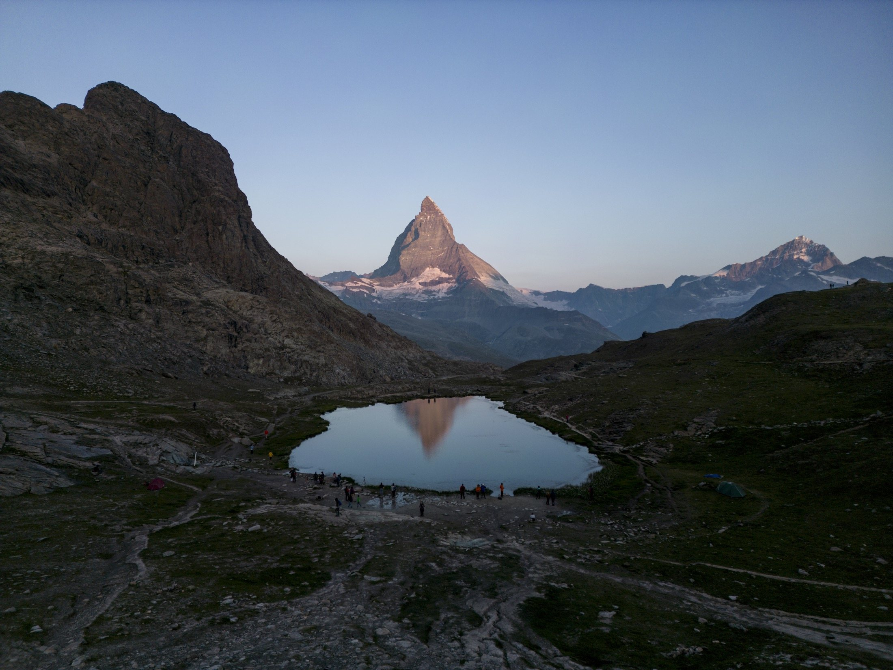
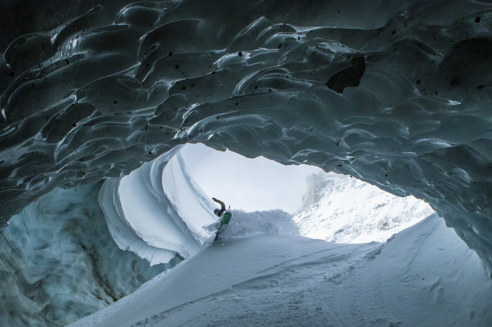
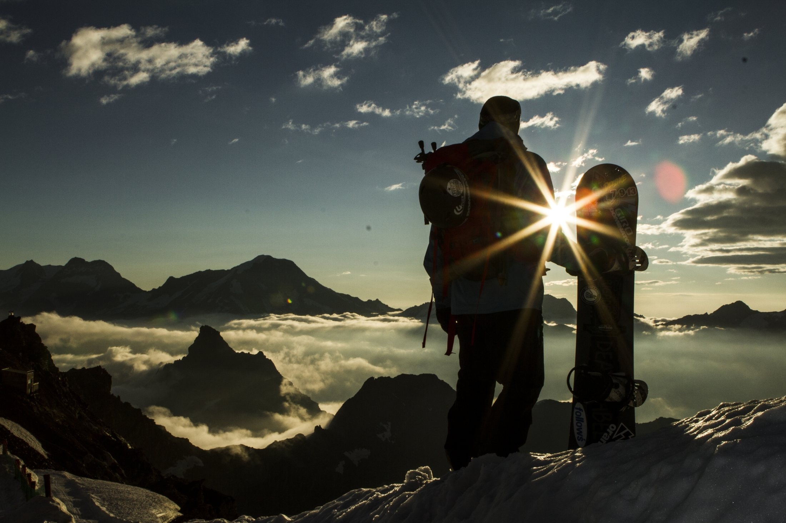
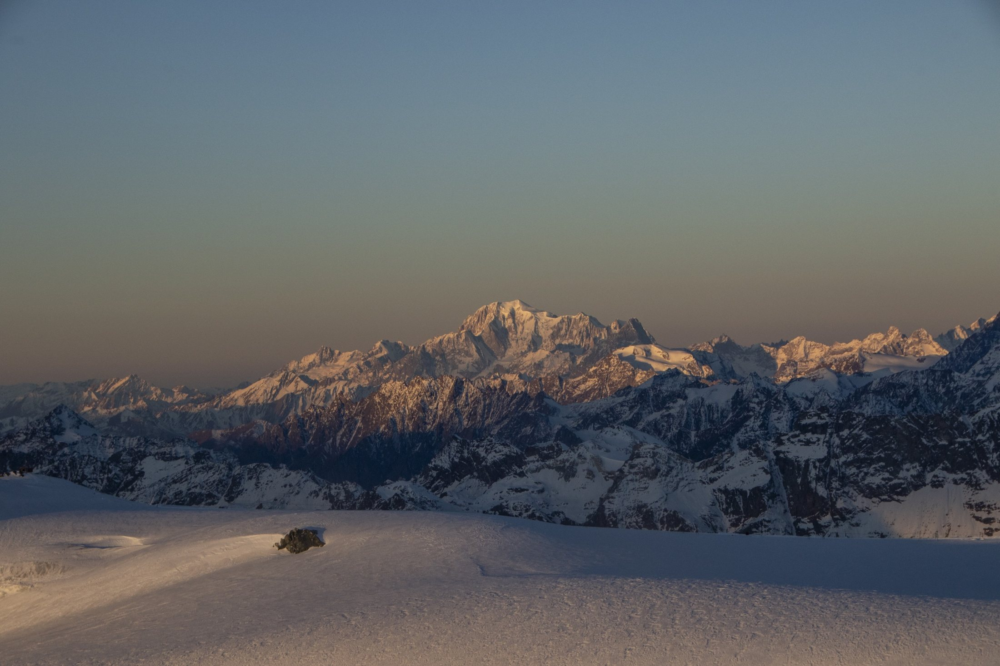

Una Suiza que
se vive de cerca.
Fotografía y vídeo para mostrar vuestros recorridos privados, vuestros guías y la experiencia de viajar por Suiza.
DESCUBRIR LA PROPUESTAVuestros viajes,
más cerca del viajero.
Descubre Suiza Tours diseña viajes privados y experiencias a medida con guías locales en español e inglés.
Propongo crear imágenes nuevas de vuestras rutas, paisajes y personas. Material que ayude a quienes buscan un viaje personalizado a imaginar cómo se vive con vuestro equipo.
Fotografía y vídeo para que vuestro equipo los use en su comunicación o para desarrollar juntos una campaña completa.

Un día de ruta,
muchas historias.
Una producción que siga a un guía local y a sus viajeros durante un recorrido: la bienvenida, el paisaje, las pequeñas paradas y la experiencia compartida. Podemos adaptarla a las rutas y estaciones que queráis impulsar.
EXPLORAR LA PROPUESTAUna propuesta.
Distintas formas de contarla.
Ideas iniciales para adaptar con vuestro equipo a las necesidades de Descubre Suiza Tours y de sus agencias colaboradoras.
Vuestras rutas privadas +
Fotografía y vídeo de los recorridos que elijáis, mostrando los paisajes, traslados, paradas y detalles que hacen especial cada itinerario.
Guías y experiencias locales +
Retratos y escenas con vuestro equipo y colaboradores, para que los viajeros conozcan a las personas que les acompañarán en Suiza.
Suiza durante todo el año +
Una biblioteca de fotografía y vídeo que muestre experiencias en distintas estaciones, según los destinos y temporadas que queráis promover.
Una campaña adaptada +
Podemos producir fotografía y vídeo para que vuestra agencia los incorpore a sus acciones, o desarrollar juntos el concepto y las piezas de una campaña según vuestro briefing.



Contenido hecho
para vuestro equipo.
Producción visual
Imágenes originales de vuestras experiencias para vuestra web, comunicación comercial y presentaciones a agencias.
Campaña completa
Desarrollo creativo y producción junto a vuestro equipo, con colaboradores locales cuando el proyecto lo requiera.
Alcance, localizaciones y licencia de uso a acordar según el proyecto. Juan conserva la autoría y la propiedad del material.

Conocer el viaje
desde dentro.
Soy Juan Aizpuru, fotógrafo y realizador con base en Bilbao. He vivido casi diez años en Suiza y trabajo con un equipo profesional en proyectos de viajes, naturaleza y deporte.
Las imágenes de esta página son de mi archivo y muestran mi estilo. Son ejemplos de mi trabajo, no imágenes de los viajes de Descubre Suiza Tours. La producción se definiría con vuestro equipo.
VER MI TRABAJO¿Hablamos de lo que
podemos crear juntos?
Me gustaría conocer qué rutas y mercados queréis impulsar y explorar una colaboración en FITUR.
HABLEMOS DEL PROYECTO